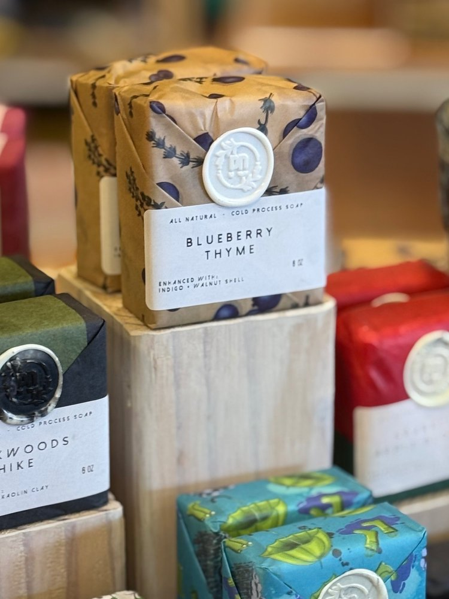

Handmade soap usually reaches you shrink-wrapped in plastic. Perriann designed our artisan tissue paper for exactly one reason: to wrap soap so beautifully that plastic never had to be an option.
The same thinking runs through the whole studio. Oils warm in metal, batches mix in glass, bars cure in silicone molds. Candles are poured into metal tins with wooden wicks. If you think about microplastics around the things that touch your skin, these are products you don't have to think twice about.
Full honesty: our oils arrive in the supplier's food-safe plastic buckets — that's the one piece of plastic in the process, and it never touches what we make after the pour.